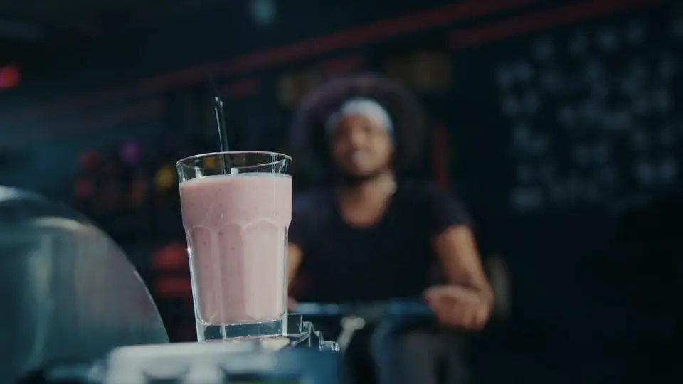
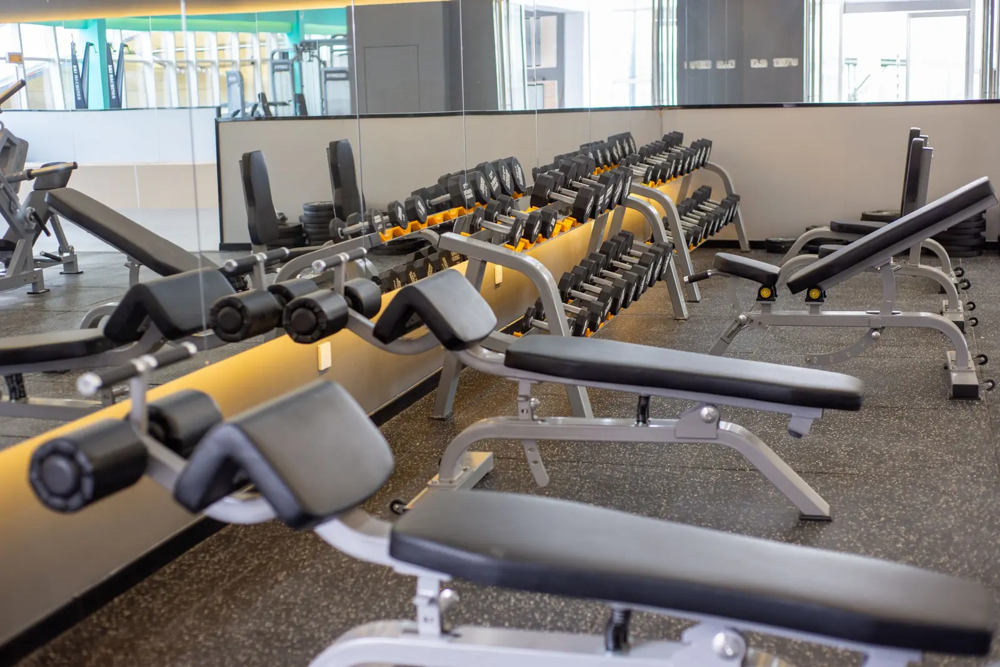
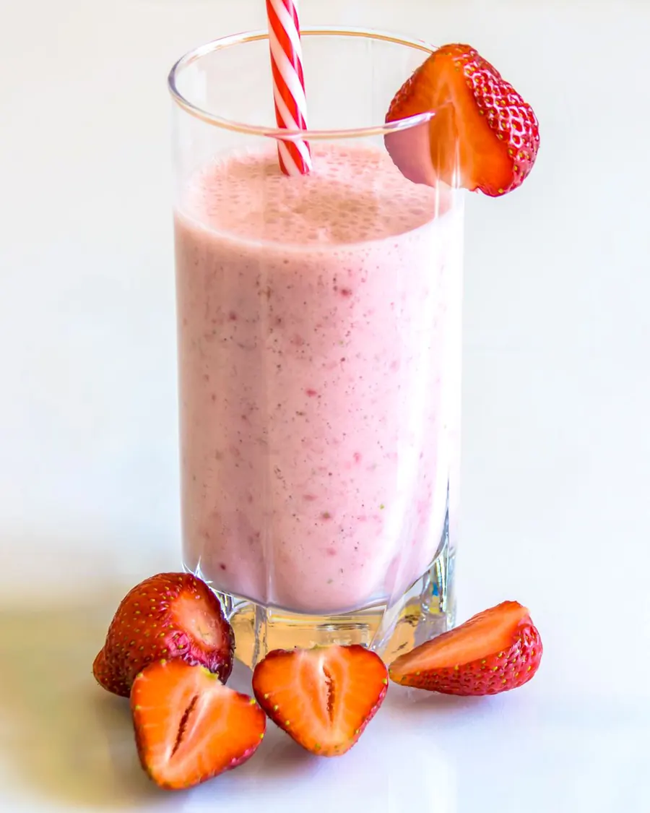
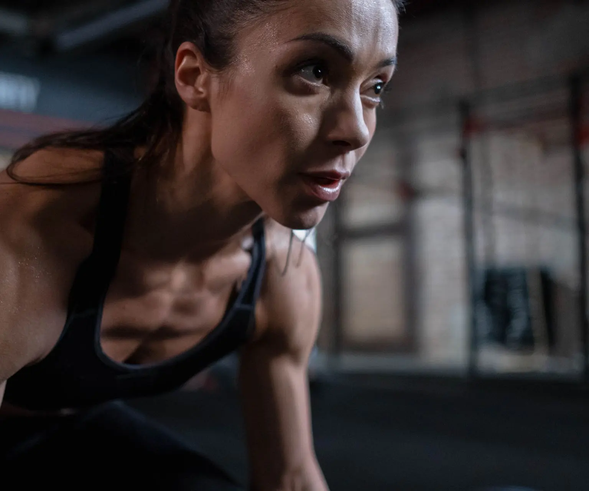
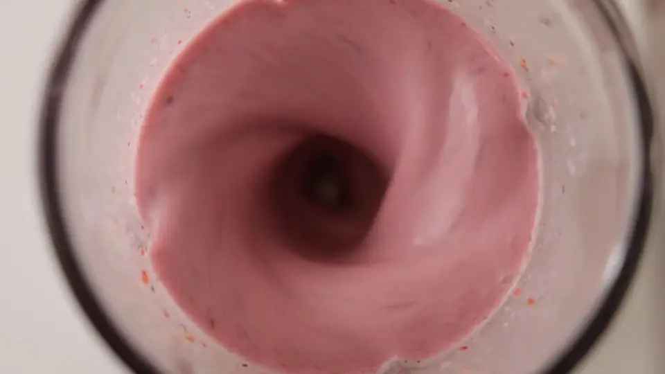
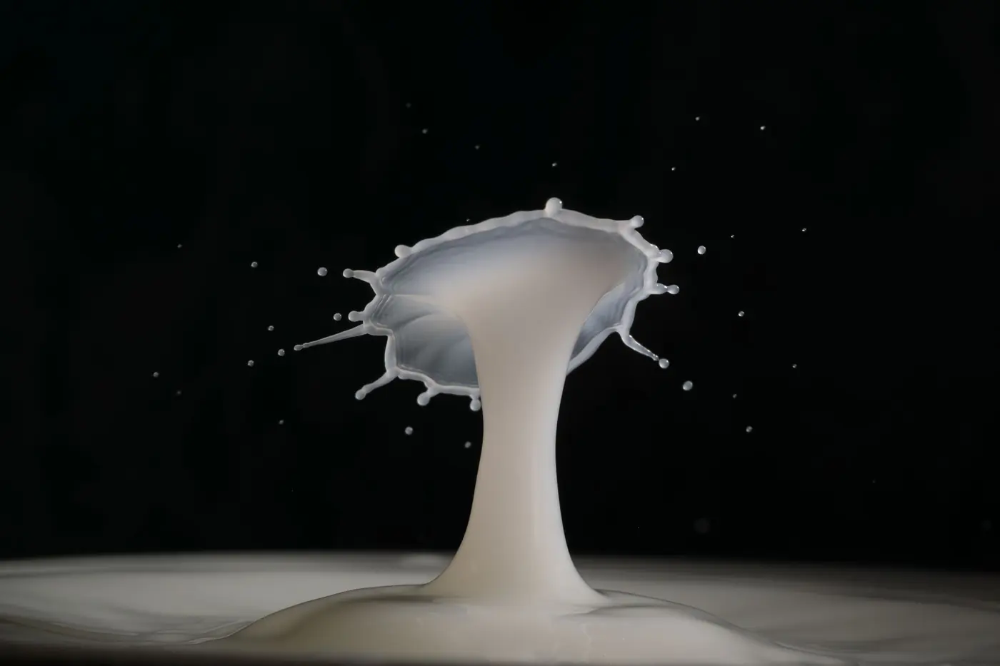

Marka białka prosto z Twojej siłowni
Świeże białko
po każdym treningu
Zimny shake z prawdziwej serwatki, zmiksowany w minutę. Czeka na Ciebie w siłowni, zaraz po treningu.
- ok. 30 gbiałka w każdym shake'u
- 1 mini shake jest gotowy
- + kreatynajednym dotknięciem, jeśli chcesz
Dla siłowni
Prowadzisz siłownię?
Stawiamy automat na nasz koszt, dbamy o niego i dzielimy się przychodem z każdego shake'a. Zaczynamy od trzech miesięcy darmowego pilotażu.
- 0 złinwestycji po stronie klubu
- 3 mies.darmowego pilotażu
- 15%udziału w przykładowym wyliczeniu

Jak to działa
Trzy kroki do świeżego shake'a
-
Wybierz smak
Wybierasz smak na ekranie. Jeśli chcesz, jednym dotknięciem dodajesz porcję kreatyny.
-
Minuta i gotowe
Automat miesza zimny, świeży shake w około minutę. Bez shakera i bez proszku w torbie.
-
Zapłać, jak wolisz
Za pojedynczy shake zapłacisz każdą popularną metodą bezgotówkową: kartą, zbliżeniowo albo telefonem.


Ekran automatu
Wypróbuj sam
Tak wygląda ekran ProWave. Wybierz smak, zdecyduj, czy na wodzie, czy na mleku, i zobacz, jak powstaje Twój shake.
- Wybierz smak na ekranie.
- Zdecyduj: woda czy mleko. Kreatyna, jeśli chcesz.
- Dotknij i patrz, jak napełnia się kubek.
To pokaz. W automacie shake powstaje w około minutę.

Produkt
Prawdziwe białko. Nic na pokaz.
W każdym shake'u jest około 30 g białka serwatkowego. Podajemy go na zimno, w ponad dwudziestu smakach, a kreatynę dodaje ten, kto jej chce.
- Białko serwatkoweSerwatka, którą sami wybieramy u źródła.
- Około 30 gSolidna porcja białka w jednym kubku.
- Kreatyna na życzenieJedno dotknięcie i porcja trafia do shake'a.
- Zawsze zimnyMieszany na świeżo, tuż przed podaniem.

Smaki
Nasze smaki
Od klasycznej wanilii po limitowane dropy. Każdy shake ma około 30 g białka serwatkowego, a każdy smak ma swój charakter.

Kreatyna na życzenie
Do każdego smaku możesz dodać porcję kreatyny. Wystarczy jedno dotknięcie na ekranie.
Rotacyjny wybór
Każdy automat ma rotacyjny wybór smaków, więc nie wszystkie są dostępne w każdej siłowni w tym samym czasie.
Powered by Waves
Od źródła do shake'a
Za ProWave stoi Waves, łotewska firma z Unii Europejskiej. Na co dzień dostarczamy producentom w całej Europie białka mleczne, takie jak WPC 80 i WPI, oraz kreatynę.
Białko do ProWave kupujemy sami, bez pośredników. Dzięki temu wiemy, co trafia do kubka, i pilnujemy zarówno jakości, jak i ceny.

- Źródło
Wybieramy białko
Kupujemy surowiec prosto od producentów.
- Waves
Pilnujemy jakości
Jakość i cenę kontrolujemy od samego początku.
- Siłownia
Uzupełniamy automat
Białko trafia do automatu w Twoim klubie.
- Shake
Świeży po treningu
Klubowicz dostaje zimny shake w minutę.
- 452zweryfikowanych dostawców Waves
- 158zadowolonych partnerów Waves
Wszystkie certyfikaty na jedno zapytanie
Do każdego produktu, który sprzedajemy, wysyłamy komplet dokumentów. Wystarczy jedno zapytanie. W zależności od surowca są to między innymi certyfikaty Halal, Kosher i ekologiczny.
- Specyfikacja
- Certyfikat analizy
- Halal
- Kosher
- EU Organic